Randers Kulturhistorisches Museum
5 Runensteine
Langå 4
Feinkörniger, rötlicher Granit
Länge: 53 cm
Breite: 48 cm
Dicke: 22 cm
Runenhöhe: 12 - 36 cm
Runeninschrift :
Toki ...
Mejlby
Grobkörniger, schwarzblauer Granit
Höhe: 142 cm
Größte Breite: 95 cm
Größte Dicke: 44 cm
Runenhöhe: 9 - 13,5 cm
Runeninschrift :
Åni errichtete diesen Stein zum Andenken an Æskil, seinen Sohn, der zusammen mit Thori (oder: der auf dem Zuge des Thori) im Øresund den Tod fand.
Spentrup 2 (Jennum-Stein)
Ziemlich feinkörniger, blauer Granit mit roten Streifen
Höhe: 112 cm
Größte Breite: 110 cm
Größte Dicke: 28 cm
Runenhöhe: 13 - 17 cm
Runeninschrift :
Askatla errichtete diesen Stein (zum Andenken an ...), den Sohn des Spaki.
Randers 1
Feinkörniger, blauer und rötlicher Granit
Höhe: 113 cm
Größte Breite: 70 cm
Größte Dicke: 42 cm
Runenhöhe: 13 - 14,5 cm
Runeninschrift :
Spor (?) errichtete diesen Stein zum Andenken an ... einen sehr wohlgeborener Thegn
Randers 2
Grobkörniger, rötlicher Granit
Höhe: 103 cm
Größte Breite: 60 cm
Größte Dicke: 33 cm
Runenhöhe: 8,5 - 14 cm
Runeninschrift :
Toki errichtete diesen Stein zum Andenken an Thorsten, seinen Bruder und Ingi, seinen Vater.
F - Randers - Museum Østjylland - Letztes Update 09.09.2025
m
| Navidaten: 56.46008 10.04039 oder: Stemannsgade 2, 8900 Randers |
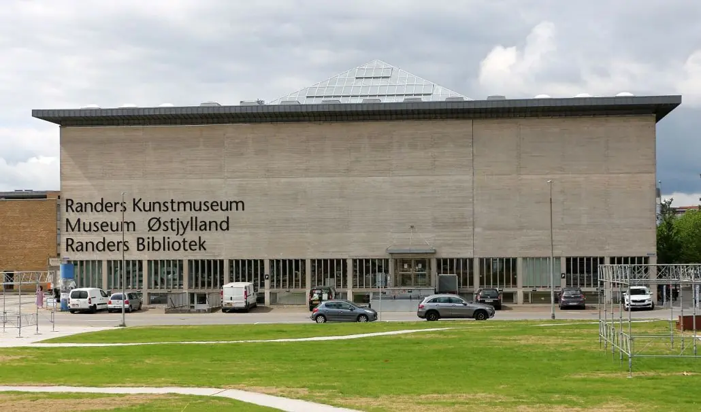
Foto vom 15.06.2022
Stemannsgade 2,
DK-8900 Randers
Öffnungszeiten: Di-So 10-16 Uhr
Der Eintritt ist frei
Internet: https://museumoj.randers.dk/
Das Museum beschäftigt sich mit der Geschichte und Kultur der Gegend von Randers vom Altertum bis zur Gegenwart. Die Sammlung des Museums umfasst Gegenstände und dokumentierte Beobachtungen aus allen Perioden. Außer den u.a. Runensteinen umfasst der Abschnitt über die Wikingerzeit hauptsächlich die Ausgrabungsfunde des Gräberfeldes von Over Hornbæk (4 km westlich von Randers) in über 40 Vitrinen u.a. mit Fibeln, Waffen, Glasperlen, Messern, Schlösser / Schlüsseln, Steigbügel usw. Es handelt sich hier um eines der größten Gräberfelder in Dänemark mit 112 Gräbern (Kinder, Frauen und Männer) aus der Zeit von 800 - 1000.
Im Jahr 2017 wurde die Ausstellung von der Eiszeit, über die Frühe und Späte Steinzeit, die Bronze- und die Eisenzeit bis hin zur Wikingerzeit - mit den fünf Runensteinen - völlig neu arangiert und unter dem Titel "Livet ved Fjorden" (wieder-)eröffnet.
Auf meine E-Mail Nachfrage vom 30.12.2022, mit der Frage wann die Runensteine in das Museum überführt wurden, bekam ich freundlicherweise am 03.01.2023 von Hanne Schaumburg Sørensen, Overinspektør, ph.d./ Senior curator, Museum Østjylland, zur Antwort, dass dies im Jahr 1969 geschah, als das neue Kulturzentrum/Museum eröffnet wurde. Es entstand an der Stelle, an der sich zuvor das alte Museum / der Museumsgarten befanden, die zuvor abgerissen worden waren.
Es sind diese 5 Runensteine ausgestellt:
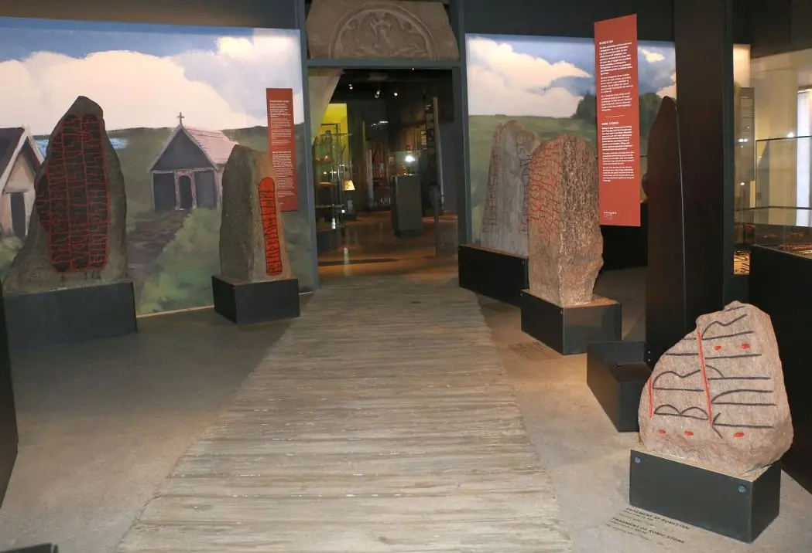
Von links nach rechts: Mejlby, Randers 1, Spentrup 2, Randers 2, Langå 4
Im Rahmen meiner 2022er Jütland Wikinger Tour habe ich es endlich mal wieder am Mittwoch, 15.06.2022, in dieses Museum geschafft. Am Freitag, 26.08.2016, war das Museum nämlich pünktlich um 16 Uhr vor meinen Augen geschlossen worden - im Verlauf einer Tagestour zu spät dran gewesen!
Zuvor hatte ich das Museum laut meinen Unterlagen schon am Samstag, 17.08.1991, am Sonntag, 02.07.2000 und nochmals am Dienstag, 30.09.2003, besucht.
Listennummer : DR 87 / DK MJy 17
Transliteration:
Seite A: : tuki : r-... : br--...
Seite B: ...-s-
Dieses Fragment eines Runensteines wurde beim Abbruch der alten Kirche von Langå im Jahre 1868 aufgefunden. Insgesamt fand man 4 Bruchstücke und Prof. Julius Magnus Petersen (*04.09.1827 - 31.01.1917, Archäologischer Zeichner und Restaurator - link-LIVES - Bestattungsprotokoll)
 Bildquelle: Fotografie
von 1903 von Fotograf Marius Christensen
(*24.06.1874 -
25.06.1907) -
Det Kgl. Biblioteks billedsamling - Lizenz:
Public Domain
Bildquelle: Fotografie
von 1903 von Fotograf Marius Christensen
(*24.06.1874 -
25.06.1907) -
Det Kgl. Biblioteks billedsamling - Lizenz:
Public Domain
sowie Prof. Ludv. F. A. Wimmer (*07.02.1839 - 29.04.1920, Philologe und Runenforscher - link-LIVES - Politiets registerblade - Bestattungsprotokoll)
 Bildquelle:
Fotografie zw. 1877-1900 von Fotograf Hansen & Weller
-
Det Kgl. Biblioteks billedsamling - Lizenz:
Public Domain
Bildquelle:
Fotografie zw. 1877-1900 von Fotograf Hansen & Weller
-
Det Kgl. Biblioteks billedsamling - Lizenz:
Public Domain
vertraten später aufgrund der unterschiedlichen Gesteinsarten der Fragmernte die Auffassung, dass sie von drei verschiedenen Runensteinen stammen müssten. Die einzelnen Bruchstücke wurden zunächst außerhalb der Kirche aufgestellt. Die zwei Bruchstücke, die man mit Langå 5 und Langå 6 - siehe unten - betitelt hatte, verschwanden bedauerlicherweise im Laufe der Zeit für immer. Die zwei Fragmernte, die Langå 4 zugeordnet wurden, tauchten Jahre später auf dem Friedhof in Langå wieder auf und fanden danach ihren Weg zum Randers Museum. Allerdings ist heutzutage nur das größere Stück ausgestellt, da irgendwann nach 1931 das kleinere Stück in Verlust geriet. Das Foto von Erik Moltke (siehe unten) stammt noch vom 24.04.1931.
Magnus Petersen berichtet in seinen Erinnerungen "Minder fra min virksomhed" - als Buch erschienen im Jahr 1909 - ab S. 103ff. (in dänischer Sprache) über die Fundumstände der Runensteinfragmente bei seinen Ortsbegehungen in Langå mit dem Pfarrer Theodor Christian Taaffe (*23.03.1824 in Gundslev/Maribo - 21.03.1885 in Keldby/Møn, zw. 1864 und 1879 Pfarrer im Pastorat Langå, Torup und Sønder Vinge - link-LIVES)

bei dem er acht Tage als Gast einquartiert war. Zu der Zeit arbeitete Magnus Petersen noch für Prof. P. G. Thorsen (*07.08.1811 - 06.05.1883, Bibliothekar, Runenforscher und Historiker - link-LIVES - Artikel: Levnedsbeskrivelser af de ved Københavns Universitets Firehundredaarsfest promoverede Doktorer, Illustreret Tidende 1882, Nr. 1235 - vom 27.05.1833 / Grabstein in Varde / Eheschließung in Varde am 19. August 1848)
 Fotografie
zw. 1863-1900on
Fotograf Budtz Müller -
Det Kgl. Biblioteks billedsamling - Lizenz:
Public Domain
Fotografie
zw. 1863-1900on
Fotograf Budtz Müller -
Det Kgl. Biblioteks billedsamling - Lizenz:
Public Domain
und dessen angedachtes Runenwerk (siehe unten). Pfarrer Theodor Christian Taaffe war immer um die Runensteinfunde bemüht. Nachdem er aber 1879 eine neue Stelle in Kjeldby auf der Insel Møn erhalten hatte (1879-1885), war ihm dies nicht mehr möglich und prompt verschwanden sie.
Hier findet man den in dänischer Sprache gehaltenen Artikel "Ingeniør Müllers runesten og andre runesten i Langå" von Benita Clemmensen und Mette Westergaard Nielsen, der im "Årbog 2015, Museum Østjylland, Randers" veröffentlicht wurde. Darin wird u.a. auch über das Fragment Langå 4 berichtet. In dem Zusammenhang erlaube ich mir einen Hinweis auf meine Ausarbeitung zu Jütland - 60 - Langå (3),
Die Runensteinfragmente finden Erwähnung bei P.G. Thorsen in seinem Runenwerk "De danske runemindesmærker beskrevne og forklarede, anden Afdeling, Jyllands Runemindesmærker, I. Afbildninger, 1879" - Nr. 68-69 - hier allerdings nur als Texteintrag:
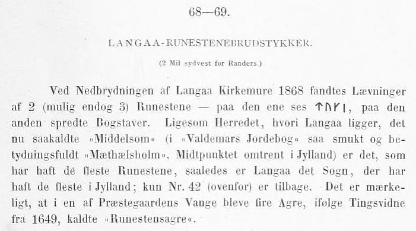
In seinem ein Jahr später 1880 erschienenen 2. Band - Text - findet sich auf der Seite 175 nur eine unwesentliche Anmerkung.
P. G. Thorsens Nachlass (Bezeichnet als: P. G. Thorsens optegnelser, tegninger m.m. vedrørende runer og runemindesmærker - überführt aus der Kopenhagener Universitätsbibliothek 1929 - Gemäß Ministerialschreiben vom 04.03.1929; früher benannt als Additamenta 612 kvart - findet sich in der Königlichen Bibliotek unter NKS 3296 (in mehreren einzelnen Pappschachteln). In der Pappschachtel Nr. 6 ist dieser Brief von Pfarrer Theodor Christian Taaffe vom 03.07.1870, der von etlichen Runensteinen an Thorsen berichtet, so auch zu den Langå Bruchstücke. In der weiteren Schachtel mit der Nummer 17 werden diese zwei Zeichnungen von Prof. Julius Magnus Petersen verwahrt, die er auf den 08.10.1869 und auf den 09.10.1869 datiert hat.
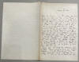 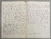 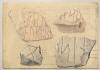 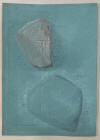
Bei Prof. Ludv. F. A. Wimmer finden diese vier Bruchstücke, die seiner Einschätzung nach nur von drei verschiedenen Runensteinen stammen, in seinem großformatigen Runenwerk "De danske runemindesmærker undersøgte og tolkede af Ludv. F. A. Wimmer, Andet Bind, Runestenene i Jylland og på øerne. 1899-1901 - Nr. 29-31, S. 160 ff. Erwähnung. Er hat die vier Bruchstücke persönlich vor Ort am 20./21.August 1877 untersucht. Als er am 18. Juli 1882 erneut vor Ort kam, fand er sie nicht mehr vor. Über Nachforschungen tauchte zwei Bruchstücke - Langå 4 (unten als I, a, und I, b bezeichnet) - wieder auf. Er hält in seinen Studien noch fest, dass die beiden anderen Bruchstücke bis November 1899 nicht wieder auftauchten.
Die in Wimmers Werk auf Seite 161 abgebildeten Zeichnungen der vier Bruchstücke von Prof. Julius Magnus Petersen möchte ich hier wiedergeben - eigener Scan (I,a und I,b = Langå 4 / II = Langå 5 / III = Langå 6). Auffällig ist, dass auf dem Bruchstück "I,a" das Runenzeichen "R" in der linken (oder der oberen) Runenlinie oben nicht bis zur Rahmenlinie, wie sonst üblich, ausgeführt wurde.
Prof. Ludv. F. A. Wimmer hat seine jahrelangen Aufzeichnungen der "Kgl. Bibliotek" in Kopenhagen überlassen. Ein Verzeichnis darüber wurde 1915 in Buchform herausgegeben - "Collectio runologica Wimmeriana: Fortegnelse over Ludv. F. A. Wimmers runologiske o. a. Samlinger i Det kgl. Bibliotek"
In seinen Unterlagen in der Königlichen Bibliothek in Kopenhagen befinden sich in "III - Originaltegninger af de danske Runemindesmærker, udførte paa Undersøgelsesrejserne af Magn. Petersen og kontrollerede paa Stedet af Ludv. Wimmer, samt Prøvetryk af de paa Grundlag af de nævnte Tegninger, Aftryk o. s. v. til De danske Runemindesmærker" udførte Afbildninger med Wimmers Rettelser" unter der Nummer 42-44 diese Zeichnung von Magnus Petersen (*04.09.1827 - 01.02.1917, Archäologischer Zeichner und Restaurator), die er auf den 21.08.1877 datiert hat.


Außerdem fand sich in Wimmers Nachlass auch noch dieser Brief von Pfarrer Theodor Christian Taaffe (siehe oben).
Diese beiden sw Aufnahmen hat Erik Moltke (*04.04.1901 - 19.10.1984, Runologe, Historiker)
 Bildquelle: Scan von Buchumschlag "Runerne i Danmark og ders
oprindelse" - Erik Moltke - 1976 - Lizenz:
CC-BY-SA
Bildquelle: Scan von Buchumschlag "Runerne i Danmark og ders
oprindelse" - Erik Moltke - 1976 - Lizenz:
CC-BY-SA
am 24.04.1931 aufgenommen.
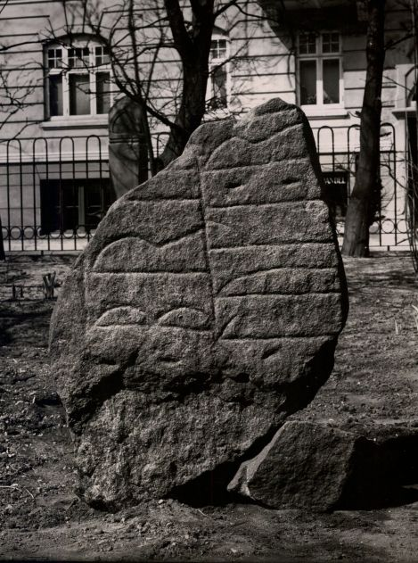
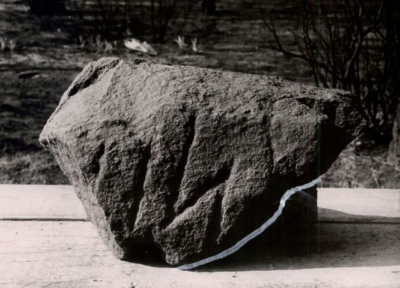
Rechts das nach 1931 verschwundene kleinere Bruchstück, das dem links abgebildeten Steinfragment Langå 4 - aufgrund gleicher Gesteinsart - als weiterer Inschriftteil zugeordnet wird. Es weist nur eine (gesicherte) Rune für ein "s" auf.
Für beide Fotografien von Moltke: Der digitalen Sammlung des Nationalmuseums Kopenhagen entnommen - Lizenz: CC-BY-SA
Im Vorfeld zu dem 2016 erschienenen Buch von Lisbeth M. Imer (*1973, Runologin am Nationalmuseum Kopenhagen) "Danmarks Runesten - en fortælling" reiste sie mit dem Fotografen Roberto Fortuna zur Bestandsaufnahme durch die Lande. Dieser hat die Runensteine mit Schräglicht aufgenommen und darüber wirklich herausragende Fotos erzielt. Diese Fotografie stammt vom 10.11.2014.
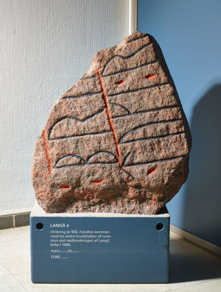
Der digitalen Sammlung des Nationalmuseums Kopenhagen entnommen - Lizenz: CC-BY-SA
Im Rahmen meiner 2022er Jütland Wikinger Tour habe ich endlich mal wieder am Mittwoch, 15.06.2022, dieses Museum besuchen und diese Fotos anfertigen können.
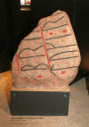 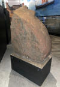 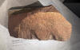
Den Eintrag zu diesem Runenstein aus der dänischen Runen Datenbank im Internet kann man hier abrufen.
Über diesen Link finden sich zu dem Runenstein Informationen des Forschungsprojektes "Runes" der Akademie der Wissenschaften zu Göttingen.
Långå 5 (MJy 18), verschwunden zw. 1877 und 1882, war ein Bruchstück aus rötlichem Granit mit schwarzem Korn, das nur vier ca. 7 cm hohe Runenzeichen aufwies, die nicht gedeutet werden konnten [...uþ : ...] und war ca. 36 cm hoch. Von den Runologen wird er auf die Zeit um 900 bis 1020 datiert.
Den Eintrag zu diesem Runenstein aus der dänischen Runen Datenbank im Internet kann man hier abrufen.
Über diesen Link finden sich zu dem Runenstein Informationen des Forschungsprojektes "Runes" der Akademie der Wissenschaften zu Göttingen.
Långå 6 (MJy 19), verschwunden zw. 1868 und 1877, war ein Bruchstück aus schwarzgrauem Granit mit blassrotem Korn. Es wies bei einer Länge von 44 cm ca. 10 cm hohe Runenzeichen mit der Inschrift "sein" auf. Von den Runologen wird auch dieses Fragment auf die Zeit um 900 bis 1020 datiert.
Den Eintrag zu diesem Runenstein aus der dänischen Runen Datenbank im Internet kann man hier abrufen.
Über diesen Link finden sich zu dem Runenstein Informationen des Forschungsprojektes "Runes" der Akademie der Wissenschaften zu Göttingen.
Listennummer : DR 117 / DK MJy 56
Transliteration: ąni : risþ : stin : þansi : aft : ą|skl : sun : sin : ias : tauþr | uarþ : maþ : þuri : i : ura:|:suti :
Schon Anfang der 1860er Jahre war dem Landwirt Christen Horn, einem belesenen älteren Herrn im Ort Mejlby - ca. 7 km nordöstlich von Randers gelegen - aufgefallen, dass da ein Stein eine Inschrift trug, auf die er nach und nach mehrere Leute aufmerksam machte. Er entdeckte ihn in einem Gartenzaun des Bauerhofes von Rasmus Andersen, in der südöstlichen Ecke der Stadt, in dem Teil des Zaunes, der zum freien Feld hin lag. Andersen hatte den Hof käuflich erworben und aus der ganzen Gegend Steine angekauft, um damit die Einfriedung seines Hofes anzulegen. Nach Auffassung des Finders soll der Stein ursprünglich von dem ungefähr 300 Alen (Elle = 0,6277 m) entfernt gelegenen Bjerge Hügel stammen, an dessen Fuß der Weg von Harridslev (ca. 4 cm südöstlich gelegen) nach Mejlby vorbeilief. Auf dieser historischen Karte von 1788 im Maßstab 1:4000 ist der Hügel mit der Bezeichnung "Bierre Höj" eingezeichnet - von mir rot eingekreist - Detailansicht unten. Quelle: Historiske Kort Klimadatastyrelsen
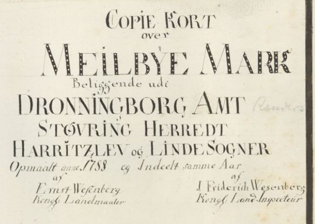
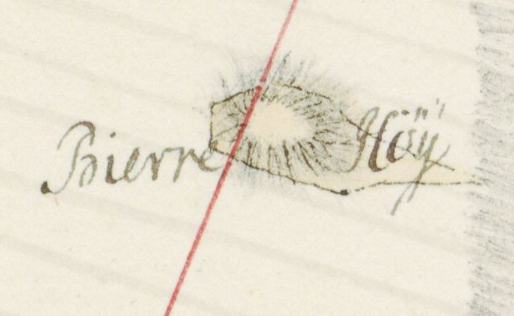
Nach der eindeutigen Aussage eines alten Maurers stand der Mejlby-Stein aber nicht hier, sondern bei den Tinghøjene. Dadurch bewegt sich der Standort in südöstlicher Richtung und auf die gegenüberliegende Südseite eines alten Tals hinunter, dessen Senke vom Fjord bei Torupkjær bis zur Skalmstrup-Bucht reicht und in dessen Talboden im Südwesten der Norkjær-Bach fließt. Die Tinghøjene auf der sogenannten Tinglodder, dem nordöstlichen Ackerland der Gemeinde Gimming, waren wohl eine große Begräbnisstätte einer alten Kultstätte. Sie bestand aus 12 sehr massiven Grabhügeln und sind darüber hinaus durch die Entdeckung von Urnengräbern unter der Feldoberfläche südlich der Hügel gekennzeichnet, die nicht wissenschaftlich untersucht wurden. Letztere liegen alle in der Nähe von Hanehoj bei Aabrinken, sowie bei Tinghoj oder Gimming Ting in der Nähe des Harridslevvejen. Durch eine Zusammenarbeit zwischen dem Nationalmuseum und der dänischen Denkmalpflegebehörde gelang es im Sommer 1931, das Denkmal für die Zukunft zu erhalten.
Quelle: Mejlbystenen - Aage Sørensen - Historie/Jyske Samlinger, Bind 5. række, 1 (1932 - 1934), S. 132-142.
Erst durch einen Aufsatz in den "Samlinger til jydsk Historie og Topografi. IV Bind. 1872-73, S. 197ff.", nämlich eine vierseitige Abhandlung (S. 202ff in der pdf Datei) zu den Runensteinen von Vester Tørslev (dort als Gjettrupstein betitelt) und Mejlby mit jeweils einer Zeichnung, erlangte der Runenstein von Mejlby eine größere Aufmerksamkeit. Dieser Bericht und auch die Zeichnung darin beruht auf der Mitteilung von Justizrat Frants Hvass (*01.10.1824 - 12.12.1890, Mitglied der Jütländischen Historisch-Topographischen Gesellschaft aus Fredriksdal bei Randers - link-LIVES) - Bestattungsprotokoll
 Bildquelle:
https://slaegtsbibliotek.dk/911086.pdf - Seite 6 -
Bildquelle:
https://slaegtsbibliotek.dk/911086.pdf - Seite 6 -
an P.G. Thorsen vom 16. Juni 1872. Hvass hatte P.G. Thorsen bereits Mitteilung zu dem Runenstein von Virring gemacht.
In der Königlichen Bibliothek in Kopenhagen fand ich bei meinem Besuch am 27.09.2022 den besagten Brief nebst der Zeichnung in der Hinterlassenschaft von P.G. Thorsen - siehe auch unten - in den Pappschachteln mit der Nummer 6 (Brief) und in der Schachtel mit der Nummer 17 (Zeichnung).
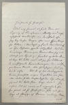 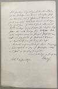 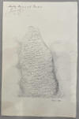
Am 09.12.1882 kaufte der ortsansässige Chefarzt Dr. Otto Viggo Lassen (*01.02.1845 -19.01.1919 - Büste in Randers, Oberarzt im Krankenhaus von Randers von 1881-1915 - link-LIVES - København Stadsarkiv - Melderegister - Begräbnisprotokoll - Begräbniseintrag Seite)
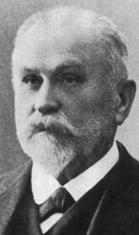
Bildquelle: Historiskranders.dk - Lizenz: Public Domainden Runenstein für den Betrag von 15 Kronen von Rasmus Andersen in der Absicht ihm dem Randers Museum zu schenken. Dies teilte er dem Nationalmuseum in Kopenhagen (erst ?) am 28.05.1899 in einem Brief schriftlich mit (Der Brief hat sich im Nationalarchiv in Kopenhagen erhalten). Als Prof. Ludv. F. A. Wimmer (*07.02.1839 - 29.04.1920, Philologe und Runenforscher - link-LIVES - Politiets registerblade - Bestattungsprotokoll)
Bildquelle:
Fotografie zw. 1877-1900 von Fotograf Hansen & Weller
-
Det Kgl. Biblioteks billedsamling - Lizenz:
Public Domain
am 14.07.1892 vorbeischaute, fand er ihn noch auf einem kleinen, eingezäunten Platz bei der Schule. Danach wurde er seinen Aufzeichnungen zufolge in den Museumskeller verbracht. Irgendwann danach wurde er in dem Museums Garten aufgestellt, bis er an seinen jetzigen Platz in das Museum in Randers wechselte.
Die Inschrift wird von den Runologen in die Zeit 970 - 1020 datiert. Sie verläuft im sogenannten Bustrophedon (abwechselnde Schreibrichtung) und beginnt in der rechten Linie von unten nach oben. Dann verläuft sie in der nächsten Linie von oben nach unten, in der 3. Linie wieder von unten nach oben und endet im vierten Runenband von oben nach unten verlaufend.
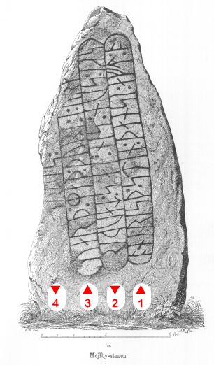
Leserichtung von mir eingezeichnetIn dem Runenwerk von Prof. P. G. Thorsen (*07.08.1811 - 06.05.1883, Bibliothekar, Runenforscher und Historiker - link-LIVES - Artikel: Levnedsbeskrivelser af de ved Københavns Universitets Firehundredaarsfest promoverede Doktorer, Illustreret Tidende 1882, Nr. 1235 - vom 27.05.1833 / Grabstein in Varde / Eheschließung in Varde am 19. August 1848)
Bildquelle: Fotografie
zw. 1863-1900 -
Fotograf Budtz Müller -
Det Kgl. Biblioteks billedsamling - Lizenz:
Public Domain
"De danske runemindesmærker beskrevne og forklarede, anden Afdeling, Jyllands Runemindesmærker, I. Afbildninger, 1879" findet sich diese Zeichnung von Prof. Julius Magnus Petersen (*04.09.1827 - 31.01.1917, Archäologischer Zeichner und Restaurator - link-LIVES - Bestattungsprotokoll)
Bildquelle: Fotografie
von 1903 von Fotograf Marius Christensen
(*24.06.1874 -
25.06.1907) -
Det Kgl. Biblioteks billedsamling - Lizenz:
Public Domain
unter der Nummer Nr. 44 - Google Scan.
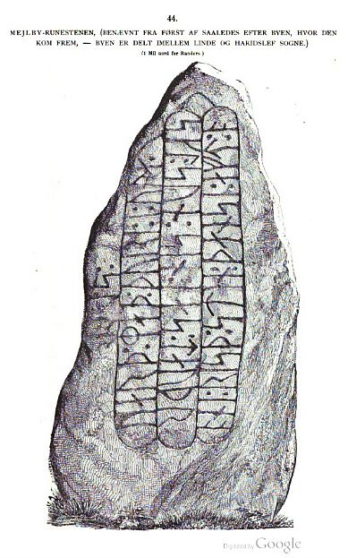
In dem ein Jahr später - 1880 - erschienenen Text- Band II - macht er auf den Seiten 127-128 Ausführungen zu seinen Studien zu diesem Runenstein mit der interessanten Inschrift.
P. G. Thorsens Nachlass (Bezeichnet als: P. G. Thorsens optegnelser, tegninger m.m. vedrørende runer og runemindesmærker - überführt aus der Kopenhagener Universitätsbibliothek 1929 - Gemäß Ministerialschreiben vom 04.03.1929; früher benannt als Additamenta 612 kvart - findet sich in der Königlichen Bibliothek in Kopenhagen unter NKS 3296 (in mehreren einzelnen Pappschachteln).
In der Pappschachtel mit der Nummer 17 wird diese Zeichnung von Magnus Petersen, die er auf den 22.07.1873 datiert hat, verwahrt, die ich bei meinem Besuch am 27.09.2022 darin vorfand und fotografieren durfte.
Prof. Ludv. F. A. Wimmer berichtet in seinem großformatigen Runenwerk "De danske runemindesmærker undersøgte og tolkede af Ludv. F. A. Wimmer, Andet Bind, Runestenene i Jylland og på øerne. 1899-1901" unter der Nummer/Seite Nr. 46, S. 213ff. über seine Forschungen zu dem Runenstein und bringt eine Zeichnung von Magnus Petersen - eigener Scan. Ludv. F. A. Wimmer hat den Runenstein persönlich vor Ort am 29. August 1877 und nochmals am 14. Juli 1892 untersucht.
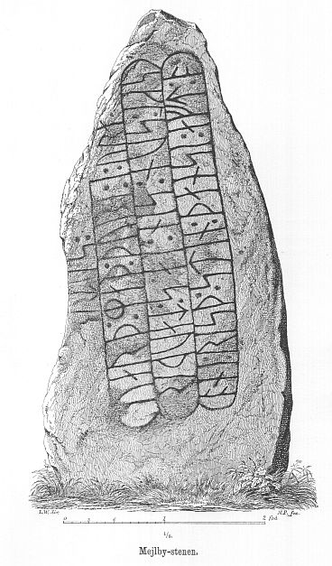
Ludv. F. A. Wimmer hat seine jahrelangen Aufzeichnungen der "Kgl. Bibliotek" in Kopenhagen überlassen. Ein Verzeichnis darüber wurde 1915 in Buchform herausgegeben - "Collectio runologica Wimmeriana: Fortegnelse over Ludv. F. A. Wimmers runologiske o. a. Samlinger i Det kgl. Bibliotek".
In seinen Unterlagen - Fotos der Aufbewahrungsschachtel III siehe oben - in der Königlichen Bibliothek in Kopenhagen befinden sich in "III - Originaltegninger af de danske Runemindesmærker, udførte paa Undersøgelsesrejserne af Magn. Petersen og kontrollerede paa Stedet af Ludv. Wimmer, samt Prøvetryk af de paa Grundlag af de nævnte Tegninger, Aftryk o. s. v. til De danske Runemindesmærker" udførte Afbildninger med Wimmers Rettelser" unter der Nummer 57 diese Zeichnung von Prof. Julius Magnus Petersen *04.09.1827 - 01.02.1917, Archäologischer Zeichner und Restaurator), die er auf den 29.08.1877 datiert hat.
Erik Moltke (*04.04.1901 - 19.10.1984, Runologe, Historiker)
Bildquelle: Scan von Buchumschlag "Runerne i Danmark og ders
oprindelse" - Erik Moltke - 1976 - Lizenz:
CC-BY-SA
hat dieses Foto am 24.04.1931 fotografiert.
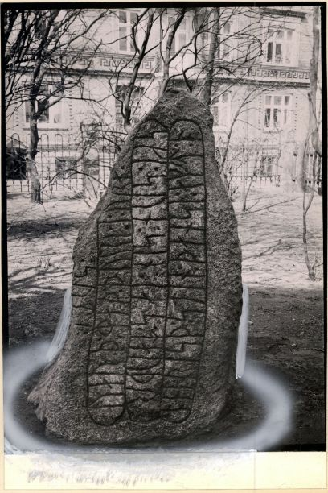
Quelle: Digitale Sammlungen des Nationalmuseum Kopenhagen - Lizenz: CC-BY-SA
Im Vorfeld zu dem 2016 erschienenen Buch von Lisbeth M. Imer (*1973, Runologin am Nationalmuseum Kopenhagen) "Danmarks Runesten - en fortælling" reiste sie mit dem Fotografen Roberto Fortuna zur Bestandsaufnahme durch die Lande. Dieser hat den Runenstein mit Schräglicht bei Dunkelheit aufgenommen und darüber wirklich herausragende Fotos erzielt. Diese Fotografie stammt vom 10.11.2014.
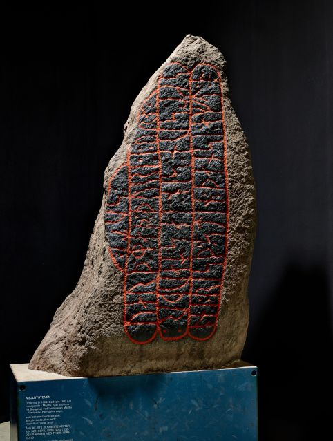
Quelle: Digitale Sammlungen des Nationalmuseum Kopenhagen - Lizenz: CC-BY-SA
Informationen zu der audiovisuellen Geschichte über die Entstehung des Runensteins, mit ihm als Bildfläche im Mittelpunkt, die seit Anfang 2009 im Museum vorgeführt wird, können über diese Seite abgerufen werden. Auszug aus der Seite (übersetzt): Dieses Projekt diente als Experiment, wie man Museumsbesucher mit Animation, Text und visuellen Effekten als Elemente von Projektionen auf diesem dänischen Runenstein, dem Mejlby-Stein, einbeziehen kann. Die Installation verschmilzt die physische Ausstellung und die Informationsvermittlung, indem sie römische Buchstaben und Grafiken direkt auf den Stein projiziert und so die Geschichte, die vor 1000 Jahren in den Stein gemeißelt wurde, für ein heutiges Publikum zum Leben erweckt. Das Ungewöhnliche an der Installation "The Mejlby Stone" ist, dass das Exponat selbst, der Runenstein, als Bildschirm verwendet wird. Der Runenstein und die Installation wurden im Jahr 2010 kurzzeitig zur einer Konferenz, auf der Regionen mit Kreativität und Innovation zusammenarbeiten, nach Oklahoma City in die USA überführt.
Als Video in YouTube auch hier anzuschauen.
Bei meinem Besuch am 15.06.2022 in diesem Museum war ich insbesondere auf diese Installation gespannt. Aber da stand ich nun vor dem schönen Runenstein, sah den Beamer an der Decke und nix passierte. Lag es an mir? Ich habe nach einiger Zeit des vergeblichen Umsehens das Museumspersonal darauf aufmerksam gemacht und die Damen nahmen sich meinem Anliegen erfreulicherweise umgehend an. Über ein Telefonat mit einem Haustechniker, der zu einem Neustart der Anlage riet, beseitigte eine Museumsangestellte glücklicherweise das Problem zeitnah. Diese Form von Wissensvermittlung hat mich wirklich sehr angesprochen. Das dürfte es ruhig öfters geben. Schon der Video in YouTube ist schön anzuschauen, aber vor Ort war es noch einmal was ganz anderes! Danke nochmals dem hilfreichen Museumspersonal!
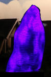 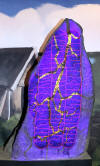 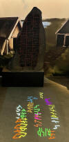 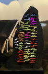 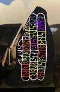 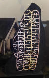 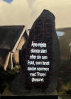
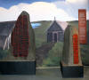 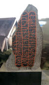 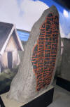 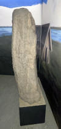
Den Eintrag zu diesem Runenstein aus der dänischen Runen Datenbank im Internet kann man hier abrufen.
Über diesen Link finden sich zu dem Runenstein Informationen des Forschungsprojektes "Runes" der Akademie der Wissenschaften zu Göttingen.
Literaturhinweise:
Tvende Runestene (Foreløbig meddelelse) - Med to lithograferede Afbildninger - Samlinger til Jydsk Historie og Topografi, IV Bind, 1872-3, S. 197-198 - Zeichnungen der beiden im Text behandelten Runensteine von Vester Tørslev und Mejlby (Nach der Zeichnung voin Justizrat Frants Hvass) sind dem Artikel (ohne eigene Seitenzahl) vorangestellt.
Mejlbystenen - Aage Sørensen - Historie/Jyske Samlinger, Bind 5. række, 1 (1932 - 1934), S. 132-142.
Spentrup 2 (Jennum-Stein)
Listennummer : DR 120 / DK MJy 51
Transliteration: ąskatla : risþi (:) -...-ls : sbika : sun : stin : | þąnsi (: :)
Den Stein ziert ein stilisierter Thorshammer am Ende der Inschrift (links außen). Die Inschrift ist heute mit roter Farbe hervorgehoben. Sie wird von den Runologen in die Zeit von 970 - 1020 datiert. Auch diese Inschrift ist als Bustrophedon angelegt. Sie beginnt in der rechten Linie von unten nach oben, verläuft in einem Bogen entlang der Steinkontur nach unten, um dann in der linke Linie von unten nach oben zu enden. Darauf folgt der Thorshammer, bevor dieses Runenband in einem halbkreisförmigen Bogen schließt.
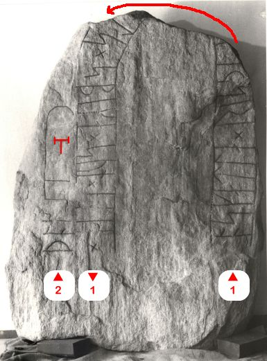
Bildquelle: Digitale Sammlungen des Nationalmuseum Kopenhagen - Lizenz: CC-BY-SA - Leserichtung von mir eingezeichnetIn Søren Abildgaards (*18.02.1718 - 02.07.1791, Zeichner, Kupferstecher und Geologe)
 Bildquelle:
Jellingprojektet - Lizenz:
Public Domain -
http://www5.kb.dk/images/billed/2010/okt/billeder/object444188/da/
Bildquelle:
Jellingprojektet - Lizenz:
Public Domain -
http://www5.kb.dk/images/billed/2010/okt/billeder/object444188/da/
Reiseaufzeichnungen von 1767 findet sich folgender Eintragung (übersetzt): Hier in Spentrup, ein kleines Stück vom Fierding Weg entfernt, bei Jennum in einem breiten Bach am Ende einer Steinbrücke liegt ein flacher Runenstein 2 Alen (Elle=0,627 m) lang und 1 ½ Alen breit, mit Runen auf einer Seitenfläche.
Danach geriet die betreffende Örtlichkeit wieder in Vergessenheit, bis der Stein 1913 bei der Umsetzung eines Steinkanals unter der Straße in Jennum zu Tage trat. Die Rückseite des Steines war inzwischen behauen und in diesem Kanal verwendet worden. Als der Regen das Erdreich vom Stein abwusch, erkannte man erst die Runen. Der Stein wurde dem Randers Museum geschenkt, wo er wieder zusammengesetzt und im Garten aufgestellt wurde. Irgendwann nach dem 24.04.1931 (siehe Moltkes Foto) wurde er auf seinen jetzigen Platz in das Museum in Randers überführt.
Durch Frederik Johannes Henrik Orluf (*04.02.1869 -11.09.1954, Lektor cand. mag., Lehrer und Hobbyforscher)
 Bildquelle:
Vejle Wiki - Lizenz:
Public Domain
Bildquelle:
Vejle Wiki - Lizenz:
Public Domain
wurde in der Zeitung "Berlingske politiske og Avertissements Tidende", Abendausgabe vom Mittwoch, 22.10.1913, dieser Bericht zur Wiederentdeckung dieses Runensteins veröffentlicht.
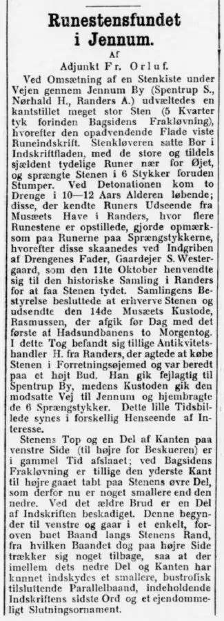
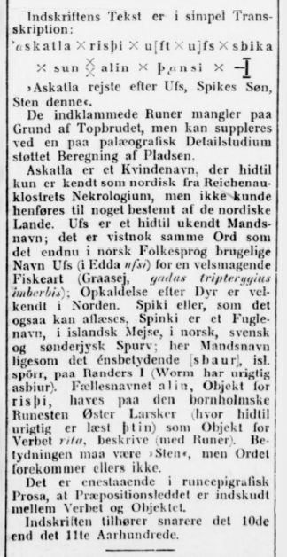
Übersetzung: "Runensteinfund in Jennum - Bei der Umsetzung eines Steinkanals unter der Straße durch den Ort Jennum (Spentrup Sogn, Nørhald Herred, Randers Amt) fiel daraus ein sehr großer Stein um (5 Kvarter dick vor der Spaltung der Rückseiteseite / Anm.: 1 Kvarter = 15,69 cm). Die Oberfläche zeigte nun eine Runeninschrift. Der Steinmetz sah die großen und manchmal selten deutlichen Runen aus nächster Nähe, bohrte trotzdem ein Loch in die Inschriftfläche und zerbrach den Stein darüber in 6 Stücke. Bei der Sprengung kamen zwei Jungen im Alter von 10-12 Jahren angerannt, die Runenzeichen aus dem Museumsgarten in Randers kannten, wo mehrere Runensteine angeordnet sind. Sie machten auf die Runen auf den Bruchstücken aufmerksam, woraufhin die Steinstücke durch die Intervention des Vaters der Jungen, Landbesitzer S. Westergaard, nun verschont wurden. S. Westergaard wandte sich am 11. Oktober an die Historische Sammlung in Randers, um die Inschrift entschlüsseln zu lassen. Der Vorstand der Sammlung beschloss, den Stein zu erwerben, und entsandte am 14. den Kurator des Museums, Rasmussen, der vor Tagesanbruch mit dem ersten der beiden Morgenzüge der Hadsundbahn abreiste. In diesem Zug befand sich auch der Antiquitätenhändler H. aus Randers, der den Stein für geschäftliche Zwecke kaufen wollte und auf ein hohes Gebot eingestellt war. Er ging aber fälschlicherweise nach Spentrup, während der Kurator den entgegengesetzten Weg nach Jennum nahm und mit den 6 Bruchstücke nach Hause kam. Dieses kleine Bild der Zeit erscheint in verschiedener Hinsicht von Interesse.
Die Oberseite des Steins und ein Teil der Kante auf der rechten Seite wurden in
alter Zeit abgeschlagen; beim Aufspalten der Rückseite ist auch die äußerste
rechte Kante am oberen Teil des Steins verloren gegangen, die daher jetzt etwas
schmaler ist als die linke. Durch den älteren Bruch ist ein Teil der Inschrift
beschädigt. Diese beginnt rechts unten und geht in einem einzigen gebogenen Band
am Rand des Steins entlang, von dem sich das Band auf der linken Seite jedoch
etwas zurückzieht, so dass zwischen seinem unteren Teil und dem Steinrand das
Einfügen eines schmaleren, bustrophed verlaufenden, Verbindungsbandes möglich
war, das das letzte Wort der Inschrift und ein eigentümliches Schlussornament
enthält.
Der Text der Inschrift ist in einfacher Transkription:
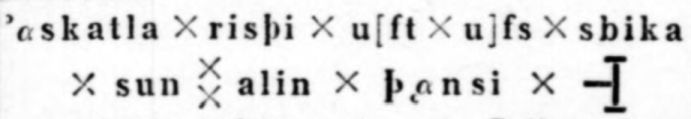
Askatla errichtete nach Ufs, Spikes Sohn, diesen Stein. Die umschließenden Runen fehlen aufgrund des oberen Bruchs, können aber durch eine Flächenberechnung ergänzt werden, die durch eine detaillierte paläographische Studie unterstützt wird.
Askatla ist ein weiblicher Name, der im Nordischen bisher nur aus dem Nachruf
auf das Reichenauer Kloster bekannt war, aber keinem bestimmten nordischen Land
zugeordnet werden konnte. Ufs ist ein bisher unbekannter männlicher Vorname; es
ist wahrscheinlich dasselbe Wort wie der Name Ufs (in der Edda ufsi), der in der
norwegischen Umgangssprache immer noch für eine schmackhafte Fischart verwendet
wird (Graasej, gadus tripterygius imberis); Berufung auf ein Tier ist in
den nordischen Ländern wohlbekannt. Spiki oder, wie es auch gelesen werden kann,
Spinki ist ein Vogelname, isländisch Meise, auf Norwegisch, Schwedisch und in
Südjütland Spatz; hier Männername wie die Bedeutung (sbaur), isl. Spörr, auf
Randers I (Ole Worm hat fälschlich Asbiur). Der gebräuchliche Name alin, Objekt
für risþi, findet sich auf dem Bornholmer Runenstein Øster Larsker (wo bisher
fälschlicherweise þtin gelesen wurde) als Objekt für das Verb rita, beschreiben
(mit Runen). Die Bedeutung muss "Stein" sein, aber das Wort kommt sonst nicht
vor.
Es ist einzigartig in der epigraphischen Runenprosa, dass die
Präpositionalphrase zwischen dem Verb und dem Objekt eingefügt wird. Die
Inschrift gehört eher ins 10. als ins 11. Jahrhundert."
In der "Nordisk Tidsskrift for Filologi, Fjerde række, Femte binds første hæfte, Kopenhagen, 1916", findet sich auf den S. 1-14 die Abhandlung "Fra de danske runeindskrifter" von Marius Kristensen (*27.04.1869 - 02.11.1941, Dr. phil. Hochschullehrer, Dänischer Sprachforscher - link-LIVES - Begravelsesprotokoller)
 Bildquelle:
Denstoredanske.lex - Lizenz:
Public Domain
Bildquelle:
Denstoredanske.lex - Lizenz:
Public Domain
Auf den Seiten 10-12 behandelt er dabei den Runenstein Spentrup 2 und zeigt diese Fotografie:
Erik Moltke (*04.04.1901 - 19.10.1984, Runologe, Historiker)
Bildquelle: Scan von Buchumschlag "Runerne i Danmark og ders
oprindelse" - Erik Moltke - 1976 - Lizenz:
CC-BY-SA
fotografierte den Runenstein am 24.04.1931.
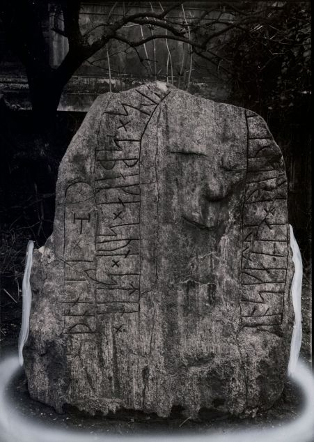
Quelle: Digitale Sammlungen des Nationalmuseum Kopenhagen - Lizenz: CC-BY-SA
Zusammen mit Marie Stoklund (*11.08.1934 - 03.09.2021, dänische Runologin am dänischen Nationalmuseum) hat Erik Moltke auch dieses Foto im Jahr 1981 aufgenommen.
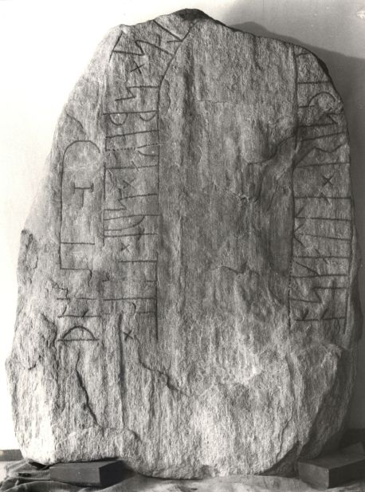
Quelle: Digitale Sammlungen des Nationalmuseum Kopenhagen - Lizenz: CC-BY-SA
Im Vorfeld zu dem 2016 erschienenen Buch von Lisbeth M. Imer (*1973, Runologin am Nationalmuseum Kopenhagen) "Danmarks Runesten - en fortælling" reiste sie mit dem Fotografen Roberto Fortuna zur Bestandsaufnahme durch die Lande. Dieser hat den Runenstein mit Schräglicht bei Dunkelheit aufgenommen und darüber wirklich herausragende Fotos erzielt. Diese Fotografie stammt vom 10.11.2014.
Quelle: Digitale Sammlungen des Nationalmuseum Kopenhagen - Lizenz: CC-BY-SA
Im Rahmen meiner 2022er Jütland Wikinger Tour habe ich am Mittwoch, 15.06.2022, diese Fotos anfertigen können.
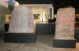 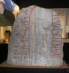 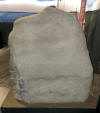
Den Eintrag zu diesem Runenstein aus der dänischen Runen Datenbank im Internet kann man hier abrufen.
Über diesen Link finden sich zu dem Runenstein Informationen des Forschungsprojektes "Runes" der Akademie der Wissenschaften zu Göttingen.
Listennummer : DR 115 / DK MJy 59
Transliteration:
Seite A: [sbau(r) : r(i)sþi : stain : þ(a)si : u-- ...aba : sina : miuk : ---- : -----]
Seite B: r : hrþa : kuþan : þign :
Der Runenstein, bzw. dessen Inschrift wird von den Runologen auf die Zeit von 970 - 1020 datiert. Die einzige lesbare Linie, farblich hervorgehoben, wird von unten nach oben gelesen.
Bereits 1623 von Albret Holst (Glaser aus Hornslet) und 1627 von Jon Skonvig (*1600 - 1664, Pfarrer und der Runenzeichner für Ole Worm) wurde in Randers ein Stein vor einer Haustür erwähnt. Nach Skonvig war er 2 Alen (ca. 125,5 cm) lang und 5 Kvarter (ca. 78,5 cm) breit. Von Snæbjørn Asgeyrsen Stadfeldt (*29.09.1753 auf Island - 23.11.1840 in Randers, Justizrat und Bürgermeister von Randers - link-LIVES) wurde dann um das Jahr 1800 dieser Stein, der damals vor dem Anwesen Storegade 5 in Randers lag, als derjenige identifiziert. Er lag mit der Kante nach oben, so dass der Eindruck entstand er sei gespalten. Ende der 1840er Jahre wurde er herausgenommen, wobei sich erst ergab, dass er auch auf der linken Breitseite, in einem simplen Schlangenband, Runen aufwies. Diese waren allerdings so stark verwittert, dass sie nicht zu deuten waren. Der Runenstein erlebte noch verschiedene Umsetzungen, so stand er auch viele Jahre bei der St. Mortens Kirche, Kirketorvet, - Backsteinbau, erbaut zw. 1494 und 1520 - dem französischen Bischof Martin von Tours geweiht - der (wie Ansgar im Norden) in Frankreich als Apostel wirkte. Ludv. F. A. Wimmer traf ihn dort noch 1877, 1878 und 1882 an. 1892 stand er dann zusammen mit dem Mejlby Runenstein in einem umzäunten Platz bei der Schule (Friskolen).
In dem Buch von J.P. Trap (*19. September 1810 - 21. Januar 1885, dänischer Kabinettssekretär und topografischer Autor - link-LIVES - Bestattungsprotokoll)
 Bildquelle:
Wikipedia
- Lizenz:
Public Domain
Bildquelle:
Wikipedia
- Lizenz:
Public Domain
mit dem Titel "Statistisk-topographisk beskrivelse af kongeriget Danmark", Volume 5, 1875, S. 512, heißt es (übersetzt): "Bei der St. Mortens Kirche ist ein Runenstein aufgestellt, der die Inschrift "harþa guþan þign" trägt. Ein anderer Stein lag zu Worms Zeit vor einem Bürgerhaus, der aber bei Pflasterarbeiten für den Bürgersteig zerschlagen wurde." Prof. Ludv. F. A. Wimmer (*07.02.1839 - 29.04.1920, Philologe und Runenforscher - link-LIVES - Politiets registerblade - Bestattungsprotokoll)
Bildquelle:
Fotografie zw. 1877-1900 von Fotograf Hansen & Weller
-
Det Kgl. Biblioteks billedsamling - Lizenz:
Public Domain
führt dazu aus, dass diese unrichtige Annahme auf unbestätigte Ausführungen von Stadtfeldt zurückzuführen sei.
Dann kam er in den Garten des Randers Museums und von dort auf seinen jetzigen Platz im Museum. Es ist umstritten, ob es sich tatsächlich um den erstmals 1623 erwähnten Runenstein handelt. Die links von der erhaltenen Inschrift befindliche Steinseite wies vermutlich Runenbänder auf, sie ist aber völlig verwittert, worüber das nicht sicher geklärt werden kann. Lis Jacobsen (*29.01.1882 - 18.06.1961, dänische Runologin und Archäologin -link-LIVES - Taufe - Melderegister - Hochzeit)
 Bildquelle:
Wikipedia
- Lizenz:
Public Domain
Bildquelle:
Wikipedia
- Lizenz:
Public Domain
hat es 1940 in einem Beitrag in den "Aarbøger for nordisk oldkyndighed, 1940, S. 152 ff." durch Vortrag verschiedener Argumente abgelehnt hier den gleichen Stein zu sehen. Darauf ging Erik Moltke (*04.04.1901 - 19.10.1984, Runologe, Historiker) 1958 in seiner Dissertation " Erik Moltke - Jon Skonvig og de andre runetegnere. Et bidrag til runologiens historie i Danmark og Norge I-II, 1956-58 Band 2 - S. 48 ff., in einem Exkurs ein. Er versucht darin ihre Argumente zu entkräften. Wenn es der gleiche Stein sein soll, frage ich mich allerdings, warum führten Holst und Jon Skonvig, die ihn noch vor sich sahen, nicht die heute noch gut erhaltene schmale Seite textlich/zeichnerisch an?
Die Zeichnung von Albret Holst von 1623 hat sich als Anhang zu den "Præsteindberetninger til Ole Worm fra Århus Stift, 1623" - Blatt 61 - erhalten und wurde von Erik Moltke in seinem Werk "Erik Moltke - Jon Skonvig og de andre runetegnere. Et bidrag til runologiens historie i Danmark og Norge I-II, 1956-58 Band 1" - S. 49 wiedergegeben.
Der handschriftliche Text zwischen den Runenbändern lautet: "Denne stein reis vÿ och setter opa / Sne mÿgiis graff att staa - Dit giorde Hans ven ERIC effter Hans Dø".
Die Zeichnung von Jon Skonvig (*1600 - 1664, Pfarrer und der Runenzeichner für Ole Worm) hat sich in der AM 367 fol. von 1627 erhalten - Originalgröße: 11,5 cm. Den Stein gab er mit einer (auf heutige Maßeinheiten umgerechneten) Größe von 125,5 x 78,5 cm an.
Der handschriftliche Text unter der Runensteinzeichnung lautet: "Denne steen Findiss Vdi Randerss for En mands dør, oc Er blaaagtig Kampesteen 2 all lang och 5 quaarter bred."
Jon Skonvigs Aufzeichnungen - sechs Handschriften - haben sich in der sogenannten "Arnamagnæanske samling, A.M. 366-371 fol." (zu deutsch: Arnamagnäanische Sammlung) erhalten.
Über diesen Link kann die entsprechende digitalisierte, originale Seite 7r der AM 367 fol. eingesehen werden, die diese Runensteinzeichnung und die dazu von Jon Skonvig angefertigten Aufzeichnungen enthält. Dieses Digitalisat ist Teil der Webseite "www.handrit.is", auf der sich weitere alte (isländische) Handschriften usw. finden lassen.

Am Mittwoch, 28.09.2022, war ich in Kopenhagen in der Universität in der Arnamagnæanske Samling und durfte das Original - AM 367 fol. - in Händen halten und eingehend fotografieren. Man bat mich aber von einer Veröffentlichung meiner Fotos abzusehen und stattdessen auf die digitalisierte Handschrift über www.handrit.is zu verweisen.
Die Zeichnung von Jon Skonvig als Vorlage verwendete Ole Worm in seinem bedeutenden Runenwerk "Danicorum Monumentorum Libri Sex, Hafniae, 1643" auf der Seite 278 in Form dieses Metallschnitts:
Dieser o.a. Screenshot findet sich in einer digitalisierten Ausgabe im Internet über die Bayerische Staatsbibliothek / MDZ Münchener DigitalisierungsZentrum Digitale Bibliothek - urn:nbn:de:bvb:12-bsb10800415-0 - abgerufen 30.12.2022.
Der Runenstein sollte aufgrund einer königlichen Verfügung vom 9.2.1652 nach Kopenhagen versandt werden (siehe: Nordisk Tidsskrift for Oldkyndighed, Band 1, 1832, S. 326) - "...Henrich Thott på Dronningborg; Randers - Stenen ...". Dieser Anweisung kam man in Randers, wie andernorts auch, jedoch nicht nach. Seitens Kopenhagen wurde nicht nachgehakt, da dort 1654 die Pest ausbrach, was auch Ole Worm noch im gleichen Jahr den Tod brachte.
Die nächste Erwähnung des Runensteins findet sich bei Johannes Meier (1660, Lehrer und Verfasser) in seinem Werk Liber monumentorum Danicorum, qvi monumenta Danica Olai Wormii partim emendat partim locupletat (pdf-Datei anhand eigener Fotos von mir erstellt) von 1654 (Blatt 12) - Königliche Bibliothek Kopenhagen - GKS 2371 kvart


 Bildquelle:
Wikipedia - Lizenz:
Public Domain
Bildquelle:
Wikipedia - Lizenz:
Public Domain
hinzugefügt worden sein. Text und Zeichnungen der Handschrift - auch im Zusammenspiel - sind ansehnlicher ausgeführt als in NKS 799.
In der Königlichen Bibliothek in Kopenhagen hat sich von Johannes Meier aber auch noch eine zweite Handschrift erhalten - NKS 799 kvart - Joh. Mejeri Monumenta Runica in Dania (pdf-Datei anhand eigener Fotos von mir erstellt). Deren Entstehungsdatum ist nicht bekannt. Der Runenstein findet sich auf Blatt 10.


NKS 799 kvart - Joh. Mejeri Monumenta Runica in Dania - Papier - 44 Blatt, Blatt 41-44 unbeschrieben, aus dem 18. Jahrhundert, vormals Nr. 70 in der Manuskript Sammlung von Peder Frederik Suhm (*18.10.1728 - 07.09.1798)
 Bildquelle:
Wikipedia - Lizenz:
Public Domain
Bildquelle:
Wikipedia - Lizenz:
Public Domain
Es handelt sich um
ein Büchlein mit einfachem Pappeinband, der Buchrücken ist aus Leder und
verstärkte Ecken aus Leder weist der Buchdeckel auf. Es hat die Maße: H: ca. 20
cm / B: ca. 17 cm / D: ca. 1,5 cm. Zu den einzelnen Zeichnungen im Büchlein
wurde ein einfacher Maßstab abgebildet.
Bei beiden Exemplaren
weist immer das rechte Blatt der Doppelseite in der oberen Ecke eine mit
Bleistift geschriebene Seitenzahl auf. Diese beiden Werke sind Abschriften von
früheren Werken, die die Zeit nicht überdauert haben.
Vielleicht sind sie in Kopenhagen beim Großbrand von 1728
vernichtet worden, als neben zahlreichen privaten Beständen auch ca.
35.000 Bücher der Königlichen Bibliothek
in
Kopenhagen ein Raub der Flammen wurden!
Die
GKS 2371 kvart soll laut
Prof. Ludv. F. A. Wimmer
(*07.02.1839 -
29.04.1920, Philologe und Runenforscher
-
link-LIVES -
Politiets registerblade
-
Bestattungsprotokoll)
Bildquelle:
Fotografie zw. 1877-1900 von Fotograf Hansen & Weller
-
Det Kgl. Biblioteks billedsamling - Lizenz:
Public Domain
und seinen Infos von Christian Walter Bruun (*10.12.1831 - 28.02.1906, Königlicher Oberbibliothekar - link-LIVES)
 Bildquelle: Fotografie
um 1880 von Fotograf J. Petersen
(*19.03.1829 -
01.02.1905) -
Det Kgl. Biblioteks billedsamling - Lizenz:
Public Domain
Bildquelle: Fotografie
um 1880 von Fotograf J. Petersen
(*19.03.1829 -
01.02.1905) -
Det Kgl. Biblioteks billedsamling - Lizenz:
Public Domain
von
Niels Foss selbst abgeschrieben worden sein. Er hat die Texte laut
den Studien von
Erik Moltke
(*04.04.1901 - 19.10.1984, Runologe, Historiker)
offenbar überarbeitet, verkürzt oder geändert und seine eigene
Orthografie eingebracht (z.B. alt: haffuer - bei Foss: haver / tyck/tyk /
kircke/kirke / oc/og u.a.).
In der
NKS 799 kvart hingegen steht auf der Seite 37 links unten "Niels
Knudsen Jerne" und seine Handschrift lässt vermuten, dass er die
gesamte Abschrift angefertigt hat. Er war offenbar ein professioneller Schreiber
und könnte mit dem Niels Knudsen identisch sein, der
1728 "Skriverkarl" auf dem Holmen (Stadtviertel von
Kopenhagen) war, also ein Mann der schnell viele Texte schreiben und liefern
konnte. Er wurde am 08.11.1737 zum "ekvipageskriver"
ernannt. Es scheint dass er sich entgegen
Niels Foss sehr eng an das Original gehalten hat.
Offenbar gab es laut dem Katalog über die Büchersammlung
von
Peter
Hansen Resens (*17.06.1625 -
01.06.1688)
 Bildquelle:
Wikipedia - Lizenz:
Public Domain
Bildquelle:
Wikipedia - Lizenz:
Public Domain
"Bibliotheca
Regiæ Academiæ Hafniensi donata" Hafniæ (Kopenhagen) von
1685 - siehe
S. 273 - früher noch ein drittes Werk von
Johannes Meier mit dem Titel "Johan. Meieri
liber MS. de Monumentis Runicis sive antiqvis Danicics".
Quelle:
Erik
Moltke -
Jon Skonvig og de andre runetegnere. Et bidrag til runologiens historie i
Danmark og Norge I-II,
1956-58
Band 2
-
Kapitel 13
Zwischen Montag, 26.09.2022, und Mittwoch, 28.09.2022, habe ich in der Königliche Bibliothek - Den sorte Diamant - in Kopenhagen - u.a. diese beiden alten Handschriften nach Online-Vorbestellung zur Ansicht erhalten. Ich durfte mir Aufzeichnungen machen, sie aber auch uneingeschränkt fotografieren. Ich habe sie mit dem Smartphone komplett als Doppelseiten fotografiert und daraus jeweils eine pdf-Datei erstellt. Vielleicht hat ja jemand Bedarf an diesen seltenen Ausgaben, die aufgrund ihres Alters keinem Urheberrrecht mehr unterliegen.
Peder Hansen Resen (*17.06.1625 - 01.06.1688, Jurist und Historiker) - Er hat mit dem von ihm über 20 Jahre gesammelten Material das großartige Werk "Atlas Danicus", bestehend aus letztlich 39 Folianten, geschaffen. Nur geringe Teile wurden aber zu seiner Lebzeit gedruckt. Die Bände wurden wenige Jahre nach seinem Tod 1692 an die Königliche Bibliothek Kopenhagen übergeben. Aufbewahrt wurden sie auf dem Dachboden der Trinitatis Kirche. Dort wurden sie fleißig studiert, abgeschrieben und zeitweise ausgeliehen. Leider wurde dann ein Großteil davon beim Kopenhagener Großbrand 1728 zerstört. Es hat sich neben einigen Originalseiten - siehe Arnamagnäanische Sammlung - AM 359 fol. / AM 360 fol. / AM 361 fol. und AM 362 fol. (digitalisiert) - nur eine (verkürzte) Abschrift und außerdem Kupferstiche von etwa 200 Städteansichten aus der Vogelperspektive erhalten. Originale dieser AM 359/360/361 fol sind über die Universität Kopenhagen - Institut for Nordiske Studier og Sprogvidenskab (NorS) - AM 359 fol / AM 360 fol / AM 360 fol (Karten) / AM 361 fol - in sw abrufbar. Eine zweite (verkürzte) Ausgabe war von Vincent Lerche (*04.04.1666 - 28.07.1742, Jurist, Architekt) beauftragt worden, diese wurde aber beim Brand von Schloss Christiansborg im Jahr 1794 vernichtet.
In der Königlichen Bibliothek in Kopenhagen wird seit 1803 in der Sammlung Uldall (186 folio) diese einzige verbliebene Ausgabe, die in den 1750er Jahren durch den Hofbaumeister Laurids de Thurah (*04.03.1706 - 06.09.1759)
 Bildquelle:
Wikimedia - Lizenz:
Public Domain
Bildquelle:
Wikimedia - Lizenz:
Public Domain
aus verstreuten Resten des Atlas Danicus in 7 Bänden rekonstruiert worden war, aufbewahrt:
Wie diesem Titel zu entnehmen ist, gehörte dieses Exemplar vormals Adam Gottlob Graf von Moltke (*10.11.1710 - 25.09.1792, Staatsmann, Diplomat)
 Bildquelle:
Wikimedia - Lizenz:
Public Domain
Bildquelle:
Wikimedia - Lizenz:
Public Domain
Nach dessen Tod erwarb Herman Treschow (*11.12.1739 - 02.05.1797, Professor für Theologie, Pfarrer) diese Ausgabe. Peter Uldall (*29.06.1743 - 11.11.1798, Jurist, Theologe)
 Bildquelle:
Wikimedia - Lizenz:
Public Domain
Bildquelle:
Wikimedia - Lizenz:
Public Domain
wiederum kaufte sie für 170 Rigsdaler (Rigsdaler zu 24 Skilling - damals 1 ½ Mark) nach dessen Ableben. Er hatte aber nicht lange Freude daran, denn er starb ein Jahr später an einem Schlaganfall. Sein Sohn, Justizrat W. A. Uldall, schenkte diese Ausgabe der Kgl. Bibliothek im Jahr 1803, wo dieses großartige Werk noch heute verwahrt wird (Ein Band hat übrigens die Größe H/B/D von 40 cm x 29,5 cm x 9,5 cm).
Im Atlas VI. ist auf der Seite 536 ein Eintrag / Zeichnung vom Runenstein enthalten, die ich am 28.09.2022 vor Ort fotografieren durfte.


Der relevante latainische Text: "Ultimo civium ædes, in qvarum qvibusdam est saxum, in qvo runicis inscriptum literis: Asbiur risdi Stein dosi efter Ebbe sina miug Karlare iri Skal. Wormius in monumentis interpretatur ita: Esberus lapidem hunc posuit Ebero suo multum dilecto amico. Figura hæc est."
Deutscher Text aus dem Dänischen in "Resens Atlas, Århus Stift, Helge Søgaard, 1967, S. 90/91" von mir übersetzt: "Zuletzt sind noch die Bürgerhäuser zu nennen, in denen sich in einem ein Stein mit Runenbuchstaben befindet: Asbiur risdi Stein dosi efter Ebbe sina miug Karlare iri Skal. Worm übersetzt es in seiner Monumentorum wie folgt: Esber errichtete diesen Stein für Eber, seinen über alles geliebten Freund. Er sieht so aus."
Søren Abildgaard (*18.02.1718 - 02.07.1791, Zeichner, Kupferstecher und Geologe)
Bildquelle:
Jellingprojektet - Lizenz:
Public Domain -
http://www5.kb.dk/images/billed/2010/okt/billeder/object444188/da/
hat in seinem Tagebuch IV, 1771, Seite 119, diese Notiz und die Abzeichnung der Inschrift zu dem Runenstein aufgenommen.
Seine Tagebücher befinden sich heute im Antiqvarisk-Topografisk Arkiv in Kopenhagen. Dies ist die Fotografie einer Kopie, die auch dort vorgehalten werden und ich dort am 28.09.2022 fertigen durfte.
Snæbjørn Asgeyrsen Stadfeldt (*29.09.1753 auf Island - 23.11.1840 in Randers, Justizrat und Bürgermeister von Randers - link-LIVES) schrieb 1804 in seinem Buch "Chorografisk og Oeconomisk Beskrivelse over Randers Kiøbsted i Nørre Jylland" auf der S. 427/428 über den Runenstein (von mir zugeschnitten).
Johan Gustav Liljegren (*27.02.1791 -02.06.1837, schwedischer Nationalarchivar und Archäologe)
 BilBiBildquelle:
Schwedisches Reichsarchiv - Lizenz:
Public Domain
BilBiBildquelle:
Schwedisches Reichsarchiv - Lizenz:
Public Domain
hat den Runensteine in seinem Werk "Run-Urkunder" von 1833 auf der S. 170 mit der Nummer 1497 aufgeführt.
Quelle: Bayerische Staatsbibliothek - urn:nbn:de:bvb:12-bsb10431145-1 - abgerufen am 30.12.2022
Finnur Magnusson (dänisch auch Finn Magnusen; * 27. August 1781 in Skálholt/Island; 24. Dezember 1847 in Kopenhagen, isländischer Philologe und Archivar - link-LIVES)
 Bildquelle:
Wikimedia - Lizenz:
Public Domain
Bildquelle:
Wikimedia - Lizenz:
Public Domain
macht in seinem 1841 erschienenen Buch "Runamo og Runerne" auf den S. 189-191 Ausführungen zu dem Runenstein und zur Deutung der Inschrift.
Auch Prof. Jens Jacob Asmussen Worsaae (*14.03.1821 - 15.08.1885, dänischer Archäologe und Vorgeschichtler - link-LIVES - Bestattungsprotokoll)
 Bildquelle: Fotografie
zw. 1863-1900 von Fotograf Budtz Müller
(*26.12.1837 -
30.12.1884) -
Det Kgl. Biblioteks billedsamling - Lizenz:
Public Domain
Bildquelle: Fotografie
zw. 1863-1900 von Fotograf Budtz Müller
(*26.12.1837 -
30.12.1884) -
Det Kgl. Biblioteks billedsamling - Lizenz:
Public Domain
hat im Verlauf seiner Reisen diesen Runenstein gesehen und in seinem Notesbog X von 1850 auf den S. 115 ff. diese Eintragungen vorgenommen.

In seinem weiteren Notesbog III von 1852 hat er sich auf der S. 38 über dessen Aufstellung Notizen gemacht.

Seine Notizbücher werden heute im
Nationalmuseum in Kopenhagen, Antikvarisk-Topografisk Arkiv, aufbewahrt. Dort durfte ich am Dienstag, 27.09.2022, zu Gast sein und sie in Händen halten und fotografieren.

Durch Rasmus Henrik Kruse (*07.08.1796 - 30.05.1877, Landschaftsmaler - link-LIVES - Heirat 21.12.1851)
 Bildquelle:
Det Kgl. Biblioteks billedsamling - Lizenz:
Public Domain
Bildquelle:
Det Kgl. Biblioteks billedsamling - Lizenz:
Public Domain
wurde über den Runenstein "Randers 1" gleich zweifach in seiner handschriftlichen Abhandlung "Nørre Jyllands Mærkværdigheder i det 19. Aarh. Hs. Bd 1-2 (med) Tillæg 1-2" berichtet. Genaugenommen zunächst im Band II, 1848, Zeichnung Nr. 21, S. 46-47 und nochmals in seiner Tillæg 1 von 1856 auf den S. 14ff. mit der Zeichnung "i".


Dieses Kleinold wird heute im Nationalmuseum in Kopenhagen, Antikvarisk-Topografisk Arkiv, aufbewahrt. Dort durfte ich am Dienstag, 27.09.2022, zu Gast sein und die vier Bände in Händen halten und fotografieren.
Von Prof. P. G. Thorsen (*07.08.1811 - 06.05.1883, Bibliothekar, Runenforscher und Historiker - link-LIVES - Artikel: Levnedsbeskrivelser af de ved Københavns Universitets Firehundredaarsfest promoverede Doktorer, Illustreret Tidende 1882, Nr. 1235 - vom 27.05.1833 / Grabstein in Varde / Eheschließung in Varde am 19. August 1848)
Bildquelle: Fotografie
zw. 1863-1900n
Fotograf Budtz Müller) -
Det Kgl. Biblioteks billedsamling - Lizenz:
Public Domain
wird in seinem Buch "De danske runemindesmærker beskrevne og forklarede, anden Afdeling, Jyllands Runemindesmærker, I. Afbildninger, 1879 - Nr. 65" der Runenstein ohne Zeichnung, nur als Runenzeichen, mit dem Beitext "Bruchstück" wiedergegeben.
In seinem ein Jahr später - 1880 - erschienenen Text- Band II geht er auf der S. 174 nur kurz über 13 Zeilen auf diesen Runenstein ein.
In der Arbeit von Prof. Ludv. F. A. Wimmer (*07.02.1839 - 29.04.1920, Philologe und Runenforscher - link-LIVES - Politiets registerblade - Bestattungsprotokoll)
Bildquelle:
Fotografie zw. 1877-1900 von Fotograf Hansen & Weller
-
Det Kgl. Biblioteks billedsamling - Lizenz:
Public Domain
mit dem Titel "De danske runemindesmærker undersøgte og tolkede af Ludv. F. A. Wimmer, Andet Bind, Runestenene i Jylland og på øerne. 1899-1901" wird dieser Runenstein über die Nummer/Seite Nr. 53, S. 245ff. abgehandelt. Dort findet sich die u.a. Zeichnung von Prof. Julius Magnus Petersen (*04.09.1827 - 31.01.1917, Archäologischer Zeichner und Restaurator - link-LIVES - Bestattungsprotokoll)
Bildquelle: Fotografie
von 1903 von Fotograf Marius Christensen
(*24.06.1874 -
25.06.1907) -
Det Kgl. Biblioteks billedsamling - Lizenz:
Public Domain
sowie die Querschnitt Wiedergabe.
Prof. Ludv. F. A. Wimmer hat den Runenstein persönlich vor Ort am 29.August 1877, am 03.08.1878, am 17.07.1882 und nochmals am 14.07.1892 untersucht.
Prof. Ludv. F. A. Wimmer hat seine jahrelangen Aufzeichnungen der
"Kgl.
Bibliotek" in
Kopenhagen überlassen. Ein
Verzeichnis darüber wurde 1915 in Buchform herausgegeben
"Collectio
runologica Wimmeriana : Fortegnelse over
Ludv.
F.
A.
Wimmers runologiske o.
a.
Samlinger
i Det kgl.
Bibliotek"
-
In seinen Unterlagen - Fotos der Aufbewahrungsschachtel III siehe oben - in der Königlichen Bibliothek in Kopenhagen befinden sich unter "III - Originaltegninger af de danske Runemindesmærker, udførte paa Undersøgelsesrejserne af Magn. Petersen og kontrollerede paa Stedet af Ludv. Wimmer, samt Prøvetryk af de paa Grundlag af de nævnte Tegninger, Aftryk o. s. v. til De danske Runemindesmærker" udførte Afbildninger med Wimmers Rettelser" mit der Nummer 64 diese Zeichnung von Magnus Petersen die er auf den 29.08.1877 datiert hat.

Zwischen Montag, 26.09.2022, und Mittwoch, 28.09.2022, habe ich in der Königliche Bibliothek - Den sorte Diamant - in Kopenhagen nach Online-Vorbestellung all diese Schätze zur Ansicht erhalten und durfte alles fotografieren.
Marius Kristensen (*27.04.1869 - 02.11.1941, Dr. phil. Hochschullehrer, Dänischer Sprachforscher - link-LIVES - Begravelsesprotokoller)
Bildquelle:
Denstoredanske.lex -
Lizenz:
Public Domain
bringt in dem Buch ""Nordisk tidsskrift for filologie, Fjerde række, Femte Binds, Første Hæfte, 1916" in einer Abhandlung mit dem Titel "Fra de danske runeindskrifter" auf der S. 4 ff. einen Beitrag zu diesem Runenstein und führt u.a. die verschiedenen Zeichnungen an. Demnach soll in der GKS 739 fol. auf dem Blatt 61 die Zeichnung von Albert Holst - siehe oben - zu finden sein. Dieses Werk aus dem Jahr 1623 von Joh Ægidius wird eigentlich in Kopenhagen in der Königlichen Bibliothek verwahrt. Dort hat das Werk den Titel "Samling af originale breve mest til Joh. Ægidium fra 1623 tillige med andre Optegnelser og Efterretninger, deels in Fol. deels in Qvarto, fornemmelig Aarhuus-Stift, men og tillige Roskilde etc. vedkommende, med Tegninger af Rune-Steene og andre Monumenter." Im Vorfeld zu meinem Kopenhagen Tripp im September 2022 habe ich dieses Werk reservieren wollen, um es dann vor Ort zu begutachten. Seitens der Bibliothek wurde mir aber mitgeteilt, dass dieses Werk seit 1888 im Rigsarkivet verwahrt wird. Ein gleichlautender Eintrag findet sich auch bei E. Gigas: Katalog over Det store kongelige Bibliotheks Haandskrifter. Første Bind (1903) auf der S. 161:
Also habe ich im Rigsarkivet - heute im Gebäude der Königlichen Bibliothek (Den sorte Diamant) untergebracht - angefragt. Dort ist es aber mit verschiedenen Suchszenarien leider nicht mehr auffindbar gewesen! Man befürchtet, dass diese Sammlung, die offenbar mehrheitlich aus einzelnenen Blättern bestand, nach der Übernahme in seine Einzelteile zerlegt und irgendwo im Archiv anderweitig erfasst wurde.
Eine weitere Zeichnung dieses Runensteins soll
Kristensens Ausführungen zufolge
außerdem in der
NKS 475 fol. 15
in der Königlichen Bibliothek
in
Kopenhagen
erhalten sein - Titel: "
In der Ausgabe von "Danske Studier, 1926", Seite 31, Fußnote 2, macht Herr cand. mag. Frederik Johannes Henrik Orluf (*04.02.1869 -11.09.1954, Lehrer und Hobbyforscher)
Bildquelle:
Vejle Wiki
- Lizenz:
Public Domain
kurze Ausführungen zu der Inschrift dieses Runensteins.
Erik Moltke (*04.04.1901 - 19.10.1984, Runologe, Historiker)
Bildquelle: Scan von Buchumschlag "Runerne i Danmark og ders
oprindelse" - Erik Moltke - 1976 - Lizenz:
CC-BY-SA
fotografierte den Runenstein am 24.04.1931.
Quelle: Digitale Sammlungen des Nationalmuseum Kopenhagen - Lizenz: CC-BY-SA
Im Vorfeld zu dem 2016 erschienenen Buch von Lisbeth M. Imer (*1973, Runologin am Nationalmuseum Kopenhagen) "Danmarks Runesten - en fortælling" reiste sie mit dem Fotografen Roberto Fortuna zur Bestandsaufnahme durch die Lande. Dieser hat den Runenstein mit Schräglicht bei Dunkelheit aufgenommen und darüber wirklich herausragende Fotos erzielt. Diese Fotografie stammt vom 15.01.2016.
Quelle: Digitale Sammlungen des Nationalmuseum Kopenhagen - Lizenz: CC-BY-SA
Im Rahmen meiner 2022er Jütland Wikinger Tour habe ich am Mittwoch, 15.06.2022, diese Fotos anfertigen können.


Den Eintrag zu diesem Runenstein aus der dänischen Runen Datenbank im Internet kann man hier abrufen.
Über diesen Link finden sich zu dem Runenstein Informationen des Forschungsprojektes "Runes" der Akademie der Wissenschaften zu Göttingen.
Listennummer : DR 116 / DK MJy 60
Transliteration: tuki : ri(s)-- | -tin : þansi : ift | þurstin : sin | -(r)uþur : nuk | igi : sin : faþu-
Dieser Runenstein wurde erst am 06. Juni 1910 beim Abriss eines alten Hauses des Herrn Etatsraad Johan Ankerstjerne (*13.04.1835 - 07.01.1913 - Etatsraad = Ein vom König verliehener Ehrentitel, der den Träger in die 3. Rangklasse bei Hofe einordnete - link-LIVES)
Bildquelle: Historiskranders.dk - Lizenz: Public Domain
in der Vestergrave 46 in Randers vom Bauarbeiter Peder Laursen gefunden. Er war in zwei Stücke zerschlagen und außerdem in der Form zurechtgehauen, so dass aber glücklicherweise nur einige wenige Zeichen der Inschrift fehlen. Kurz darauf wurden die zwei Bruchstücke wieder zusammengesetzt und der Stein im Garten des Randers Museums aufgestellt, nachdem Herr Ankerstjerne ihn dem Museum geschenkt hatte.
Über den Fund berichtet Johannes Frederik (Frits) Christian Uldall (*11.02.1839 - 21.02.1921, Architekt und Historiker - link-LIVES)
 Bildquelle:
Wikipedia
- Lizenz:
Public Domain
Bildquelle:
Wikipedia
- Lizenz:
Public Domain
per Telegram gegenüber dem Nationalmuseum in Kopenhagen am 06.06.1910 (hat sich im Nationalarchiv in Kopenhagen erhalten).
Einen sehr ausführlichen Bericht übermittelte auch Cand. mag. Frederik Johannes Henrik Orluf (*04.02.1869 -11.09.1954, Lehrer und Hobbyforscher)
Bildquelle:
Vejle Wiki - Lizenz:
Public Domain
aus Vejle am 18.07.1910 an das Nationalmuseum. Eine Zusammenfassung seiner Untersuchung findet sich in "Aarsberetning for Den historiske Samling i Randers, 1910-1911, S. 4 ff." - "Den har 12 Ord med ialt 50 Bogstaver, hvoraf dog de 6 er affhuggede ved Stenens Tildannelse i tidligere Tid. Indskriften begynder forneden paa Stenen tilvenstre (Tilhøjre for Beskueren) og løber plovdrejevis, saaledes, at hveranden Linie staa paa Hovdet. Indskriften lyder paa oldnordisk saaledes: Toki rejste Sten denne efter Thorsten sind Broder og Aage sind Fader". Übersetzung: "Er besteht aus 12 Wörtern mit insgesamt 50 Buchstaben, von denen jedoch 6 in früherer Zeit abgeschlagen wurden. Die Inschrift beginnt am unteren Rand des Steins links (rechts vom Betrachter) und verläuft abwechselnd, so dass jede Zeile auf dem Kopf steht. Die Inschrift lautet wie folgt: Toki hat diesen Stein nach Thorstens Bruder und Aages Vater errichtet."
Im Garten des Randers Museums wurde er durch Lis Jacobsen (*29.01.1882 - 18.06.1961, dänische Runologin und Archäologin -link-LIVES - Taufe - Melderegister - Hochzeit)
Bildquelle:
Wikipedia - Lizenz:
Public Domain
am 19.04.1913 untersucht. Ein Bericht dazu findet sich in "Aarbøger for nordisk oldkyndighed oh historie - udgivne af det Kongelige Nordiske Oldskrift-Selskab, 1913 - S. 120 ff." Dazu wird diese Fotografie abgebildet.
Jahre später wurde er dann an seinen jetzigen Platz im Museum umgesetzt.
Interessant an dieser Inschrift ist, dass der Bruder vor dem Vater Erwähnung findet.
Die Inschrift wird von den Runologen in die Zeit von 970 - 1020 datiert. Sie verläuft in fünf senkrechten Linien im sogenannten Bustrophedon (Abwechselnde Schreibrichtung) und beginnt in der rechten Linie von unten nach oben. In der nächsten Linie wird von oben nach unten gelesen usw.
Eigenes Foto - Leserichtung von mir eingefügt
Diese drei Fotos hat Carl Martin Schmidt kurz nach seiner Entdeckung 1910 angefertigt.
Quelle: Digitale Sammlungen des Nationalmuseum Kopenhagen - Lizenz: CC-BY-SA
Marie Stoklund (1934-2021, Runologin am dänischen Nationalmuseum) hat dieses Foto 1981 angefertigt.
Quelle: Digitale Sammlungen des Nationalmuseum Kopenhagen - Lizenz: CC-BY-SA
Erik Moltke (*04.04.1901 - 19.10.1984, Runologe, Historiker)
Bildquelle: Scan von Buchumschlag "Runerne i Danmark og ders
oprindelse" - Erik Moltke - 1976 - Lizenz:
CC-BY-SA
fotografierte den Runenstein am 24.04.1931 - auf dem rechten Bild sind die Runen von ihm nachgezeichnet worden.
Scan aus "Lis Jacobsen/Erik Moltke, Danmarks Runeindskrifter, 1941, Atlas, S. 111, Nr. 293-294"
Im Vorfeld zu dem 2016 erschienenen Buch von Lisbeth M. Imer (*1973, Runologin am Nationalmuseum Kopenhagen) "Danmarks Runesten - en fortælling" reiste sie mit dem Fotografen Roberto Fortuna zur Bestandsaufnahme durch die Lande. Dieser hat den Runenstein mit Schräglicht bei Dunkelheit aufgenommen und darüber wirklich herausragende Fotos erzielt. Diese Fotografie stammt vom 15.01.2016.
Quelle: Digitale Sammlungen des Nationalmuseum Kopenhagen - Lizenz: CC-BY-SA
Den Eintrag zu diesem Runenstein aus der dänischen Runen Datenbank im Internet kann man hier abrufen.
Über diesen Link finden sich zu dem Runenstein Informationen des Forschungsprojektes "Runes" der Akademie der Wissenschaften zu Göttingen.
In den dänischen Medien wurde ab dem 09.06.2022 diese Schlagzeile verbreitet:
Runesten fundet under køkkengulv i Randers kan være blandt landets ældste - Übersetzung: Der unter dem Küchenboden in Randers gefundene Runenstein gehört möglicherweise zu den ältesten des Landes
Tatsächlich fand sich schon in 2020 in einem Haus aus der Mitte des 19. Jahrhunderts bei der Restaurierung der Küche unter dem Fußboden ein sehr großer rechteckiger Stein, ca. 80 cm x ca. 200 cm, knapp 900 kg schwer, der eine kurze Runeninschrift trägt. Entscheidend ist, ob die fünf Runen auf dem Stein den Runentext beginnen oder beenden. Die fünf Runen auf dem Stein sind aft bi zu lesen. Es kann als "nach B" übersetzt werden. Runensteine werden normalerweise nach Personen errichtet, und hier ist es vielleicht ein Bjørn oder Bjarne? Da ein Teil des Steins gebrochen oder abgeplatzt ist, können wir weder den Namen noch den Text lesen, schreibt das Nationalmuseum dazu.
Über Google Bilder kann man verschiedene Fotos dazu finden, vom Fundort, über den Abtransport bis zur Begutachtung durch Lisbeth M. Imer (*1973, Runologin am Nationalmuseum Kopenhagen) in einem Lagerraum des Museums in Randers. Irgendwann wird er wohl im Museum ausgestellt werden. Abder wann? Bis zur Begutachtung hat es auch fast 2 Jahre gedauert!
Zudem wird in einigen Vitrinen im Museum die Wikingerzeit anhand von Funden aus der näheren Umgebung um Randers beleuchtet.


Dabei handelt es sich um verschiedene Schmuck- und Waffenfunde, so z.B. der Schwertfund von Hospitalsengen 2 - Ein Schwert mit dreieckigem Knauf, bestehend aus Eisen, Silber, Kupfer, Messing (Über diesen Link findet sich ein Foto des kompletten Schwertes in der Digitalen Sammlung des Nationalmuseums Kopenhagen).
Ausgrabungsfunde des "Vikingetidsgravpladsen Kjølvejen" bei Over Hornbæk (4 km westlich von Randers) - rechtes Foto.
Literaturhinweis: Vikingetidsgravpladsen Kjølvejen, Bjarne Henning Nielsen u.a. - Undersøgelser i 1985, Ausgabe 1986 - Kulturhistorisk Museum Randers - 12 Seiten